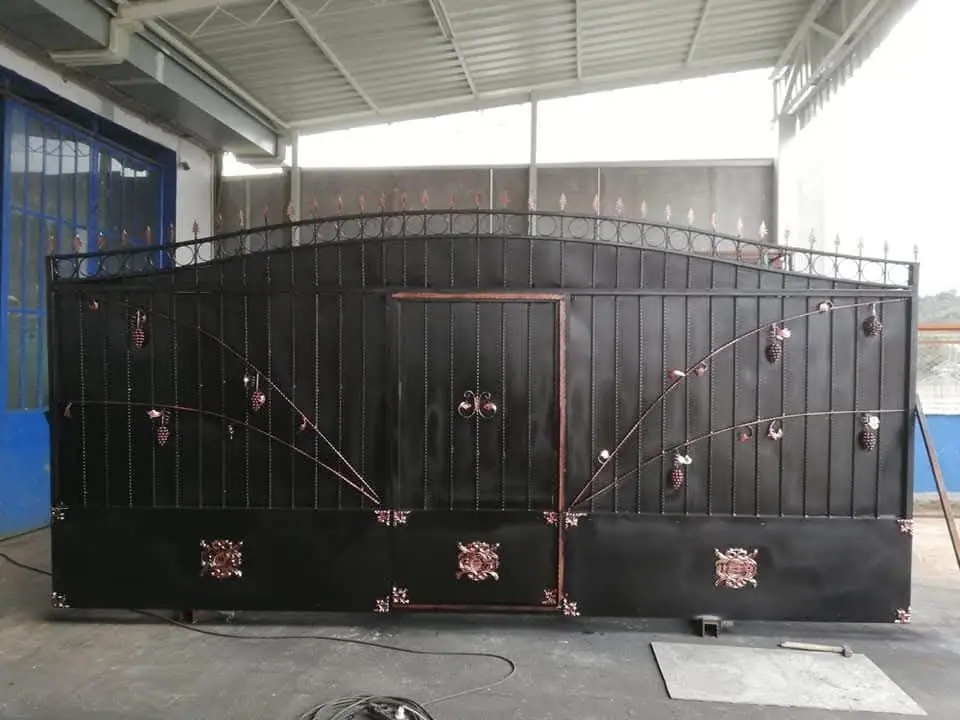

Çelik Sürgülü Kapı nedir?
Sürgülü kapılar, kanat açılma alanının olmadığı veya geniş araç girişlerinin gerektiği yerlerde duvara paralel kayarak açılır. Zemine döşenen ray üzerinde çalışan raylı sistemler ve zemine temas etmeden taşıyıcı makaralarla çalışan konsol (askılı) sistemler en yaygın iki tiptir.
Sürgülü kapının uzun yıllar sorunsuz çalışması; kanat ağırlığına uygun makara ve ray seçimine, zemin betonunun düzgünlüğüne ve kapının kayacağı alanın yeterli olmasına bağlıdır. Motorlu kullanım düşünülüyorsa bu altyapı imalat aşamasında planlanmalıdır.

Hizmet detayları
- Raylı sürgülü bahçe ve site kapıları
- Konsol (askılı) sürgülü kapılar
- Yaya kapısı entegre edilmiş modeller
- Motor ve kumanda montajına uygun altyapı
- Sac kaplamalı, ferforje veya profil dolgulu seçenekler
Uygulama alanları
- Müstakil ev ve villa girişleri
- Site ve apartman otopark girişleri
- Fabrika, depo ve şantiye girişleri
- Tarım işletmesi ve çiftlik girişleri
Kullanım senaryoları
Fabrika ve depo girişlerinde kamyon geçişine uygun geniş açıklıklı, ağır hizmet tipi sürgülü kapılar; yoğun kullanıma uygun makara ve motor seçimiyle planlanır.
Villa ve müstakil ev girişlerinde araç girişi için sürgülü kapı, yanında aynı tasarımda yaya kapısı ile birlikte yapılabilir.
Çiftlik ve tarım işletmelerinde traktör ve römork geçişine uygun genişlikte, arazi zemin koşullarına göre raylı veya konsol sürgülü kapılar tercih edilir.
Malzeme ve üretim süreci
- Kutu profil kasa ve dolgu elemanları
- Kanat ağırlığına uygun makara, ray veya konsol takımı
- Kılavuz ve stoper elemanları
- Astar, boya veya galvaniz kaplama
Avantajları
- Kanat açılma alanına ihtiyaç duymaması
- Geniş araç girişlerinde pratik kullanım
- Motorlu sisteme dönüştürülebilme
- Dolgu tipine göre farklı görünüm seçenekleri
İlgili çalışmalar
Sık sorulan sorular
Raylı mı konsol sürgülü kapı mı seçmeliyim?
Zemin düzgün ve temizse raylı sistem ekonomik bir çözümdür. Zeminde eğim, kar-çamur veya ray döşemeye uygun olmayan bir durum varsa konsol sistem tercih edilebilir; ancak kapı boyunun yanında ek kayma alanı gerektirir.
Kapıya motor takılabilir mi?
Evet, imalat sırasında dişli kremayer ve motor bağlantısı için uygun altyapı bırakılabilir. Motor seçimi kanat ağırlığına ve kullanım sıklığına göre yapılır.
Sürgülü kapı için ne kadar yan alan gerekir?
Raylı sistemlerde kapı genişliği kadar, konsol sistemlerde ise buna ek olarak karşı ağırlık bölümü kadar duvar boyunca boş alan gerekir. Kesin ölçü keşifte belirlenir.
İlçelere göre çelik sürgülü kapı
Bölgenize özel uygulama senaryoları ve sık sorulan sorular için ilçenizi seçin: